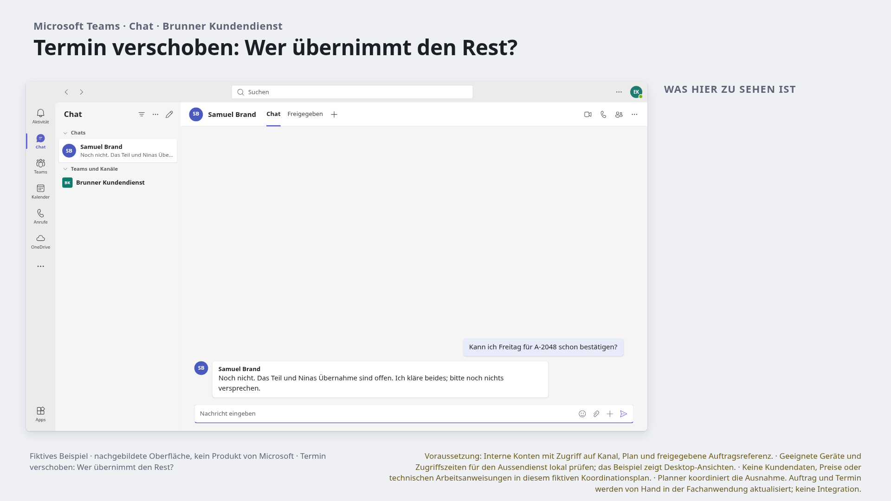
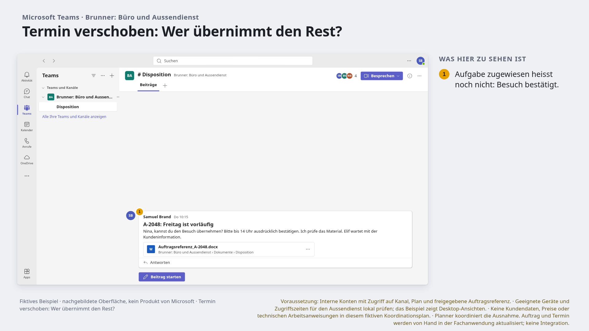
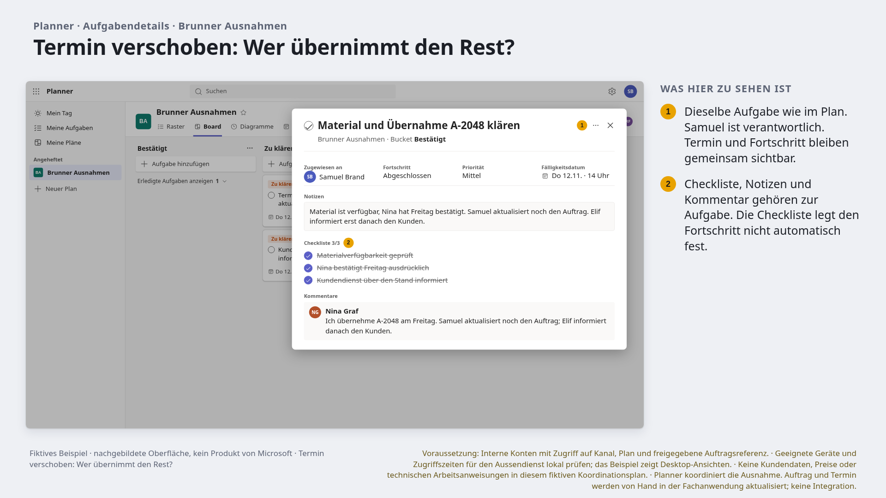
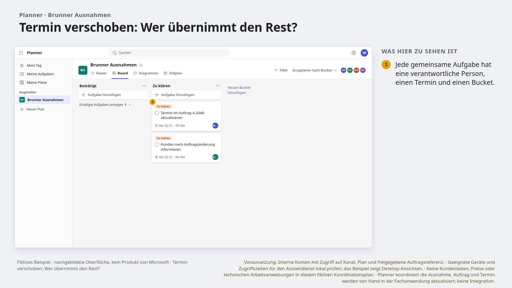
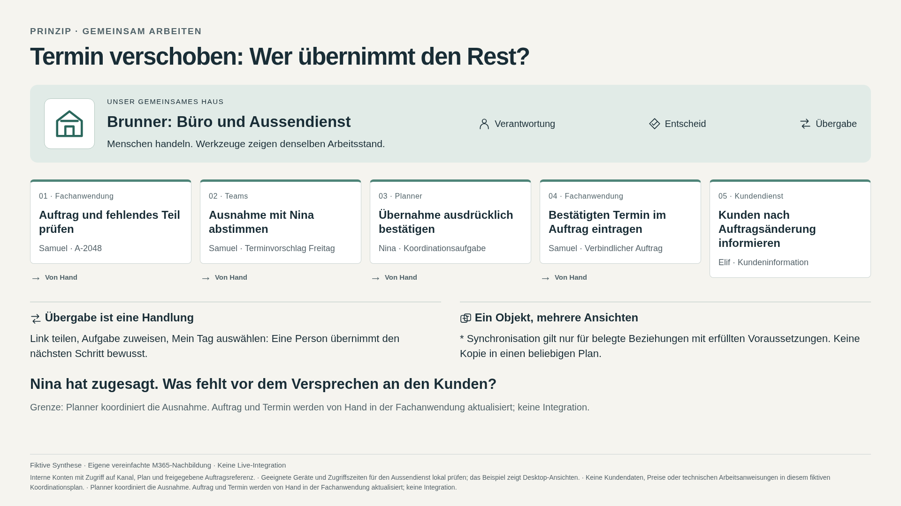

Brunner: Büro und Aussendienst · FÜNF FOLIEN
Termin verschoben: Wer übernimmt den Rest?
Nina bestätigt die Übernahme. Auftragsänderung und Kundeninformation stehen noch aus.
Projekt-JSON · Abfolge öffnen, anpassen und exportieren

1. Die Auftragsnummer ist eine fiktive Referenz, keine Systemintegration. Kundenadresse und technische Daten bleiben in der Fachanwendung. · Original-PNG
2. Samuel benennt Nina und die Antwortfrist im Kanal. Die Koordinationsaufgabe bleibt bei ihm. Eine bestehende Disposition plus Anruf kann genügen. · Original-PNG
3. Nina bestätigt ihre Übernahme im Kommentar. Material und interne Information sind geprüft. Damit ist die Klärung erledigt; Auftrag und Kundeninformation bleiben offen. · Original-PNG
4. Das Board zählt eine erledigte Klärung und zeigt zwei offene Aufgaben. Erledigte Karten sind eingeklappt. Samuel muss den Auftrag aktualisieren; Elif informiert erst danach den Kunden. Kein mobiler Praxistest. · Original-PNG
5. Nina hat zugesagt. Was fehlt vor dem Versprechen an den Kunden? Einfachere Alternative: Bestehende Disposition plus Anruf und dort dokumentierte Zusage, wenn das ausreicht. Fachsystem- und Publikationsschritte sind manuell und werden hier nur erklärt. · Original-PNGLehrfrage: Nina hat zugesagt. Was fehlt vor dem Versprechen an den Kunden?
Einfacher geht es auch: Bestehende Disposition plus Anruf und dort dokumentierte Zusage, wenn das ausreicht.